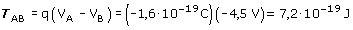

b) Como su propio nombre indica la diferencia de potencial entre dos puntos es la diferencia de sus potenciales respectivos
 En la expresión del trabajo la carga se pone con signo El trabajo es positivo porque se está alejando una carga negativa de otra negativa que la repele |